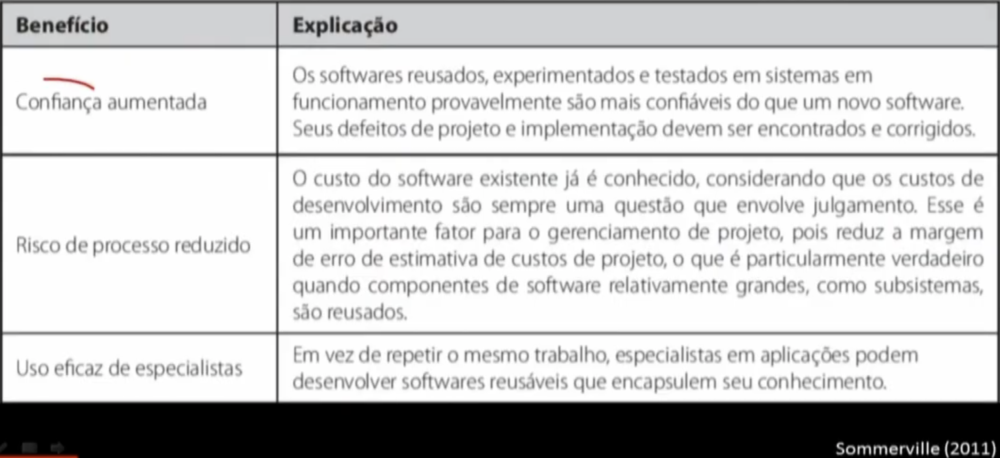
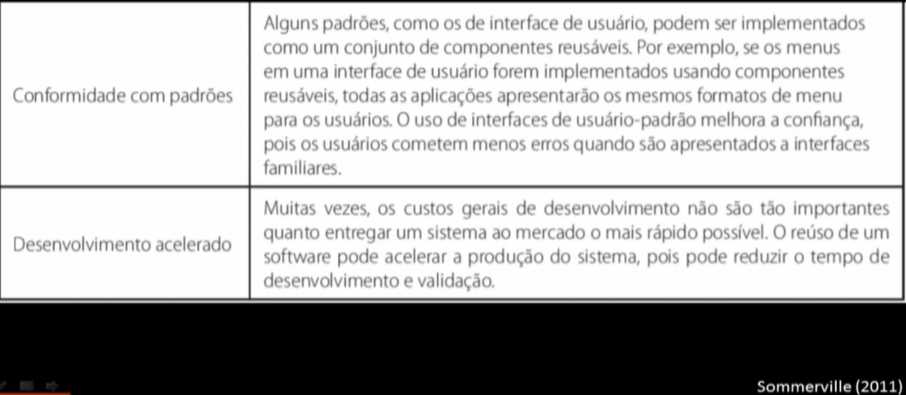
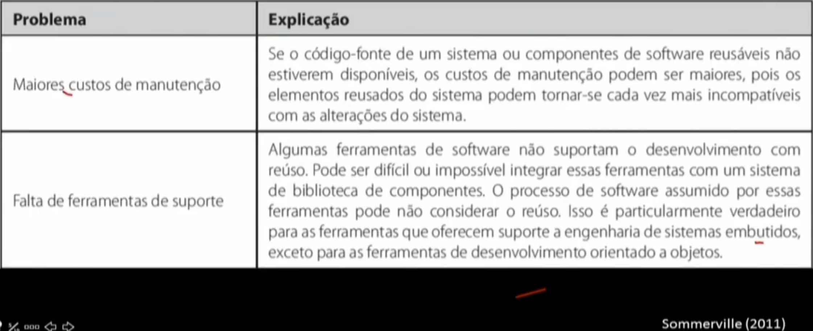
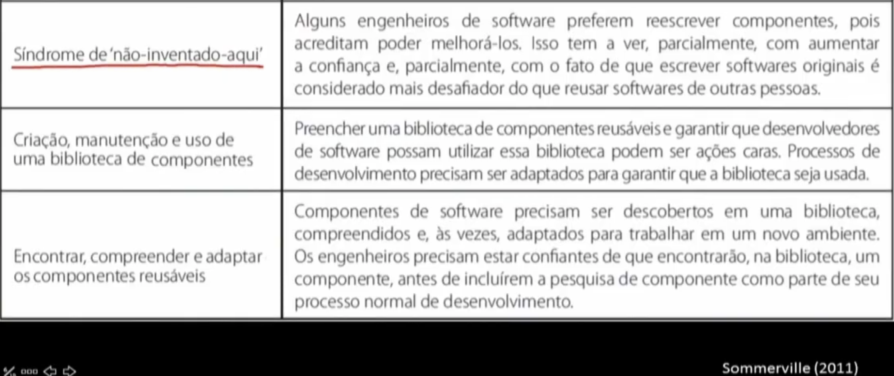
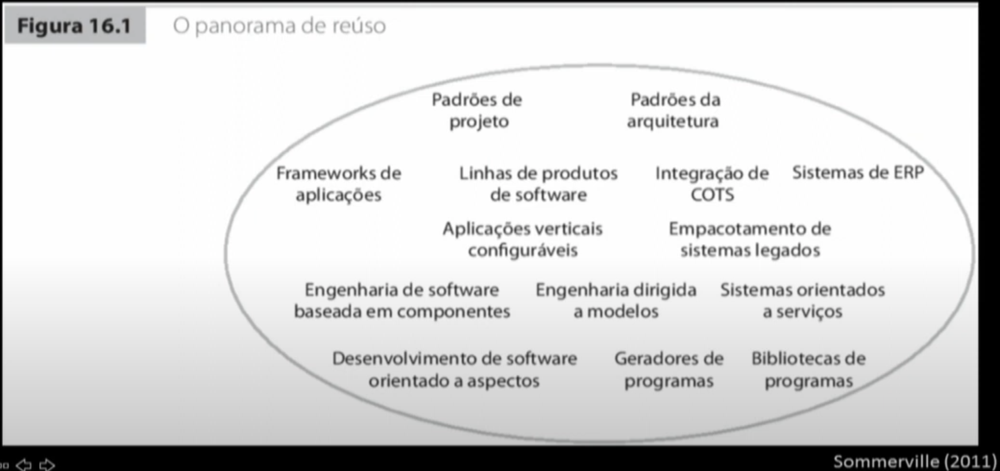
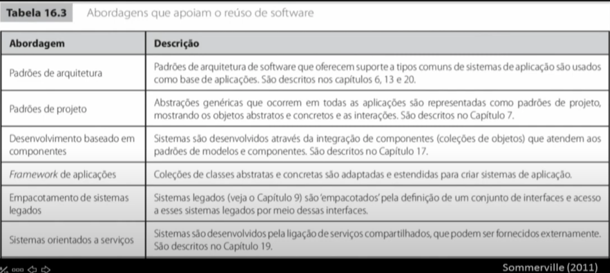
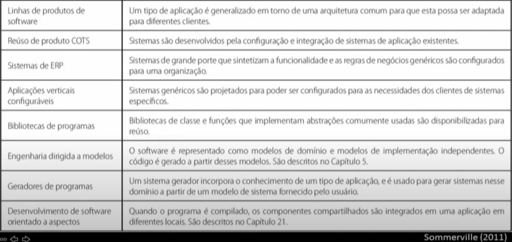

Disciplinas
ENGENHARIA DE SOFTWARE Concluído
Materiais
Vídeo 2 - Engenharia de Software - Aula 21 - Visão geral de reúso de software sendProf.° ministrante: Marcelo Fantinato
Objetivo
- Visão geral de reúso de software
Engenharia de software orientada a reúso
Proposta há mais de 40 anos
Praticada a partir do ano 2000
- Menores custos
- Entregas mais rápidas
- Maior qualidade
Níveis de reúso:
- Aplicação
- Componentes
- Objetos/funções
Benefícios de reúso de software.


Problemas com reúso de software.


Abordagens para reúso.


